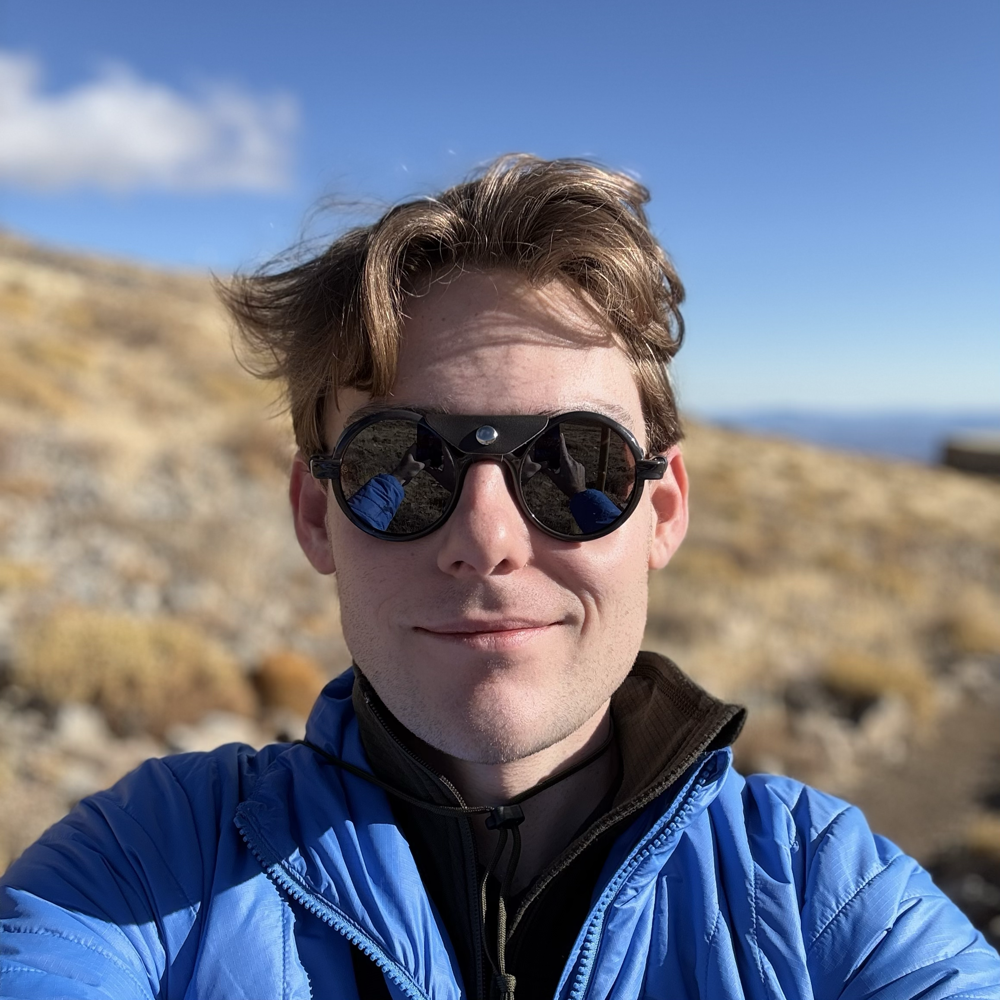

Postdoctoral Research Associate
Dr. Alex Broughton
Kavli Institute for Particle Astrophysics & Cosmology (KIPAC)
SLAC National Accelerator Laboratory / Stanford University
I work on the Legacy Survey of Space and Time (LSST) at the Vera C. Rubin Observatory. As a postdoctoral researcher at KIPAC, I lead development, commissioning, and science validation for Instrument Signature Removal (ISR) in the Data Management Science Pipeline. I am part of the TAXICAB calibration team for ComCam on-sky calibration, and I contribute forward models of image systematics to cosmology in the Dark Energy Science Collaboration (DESC) Pixel-to-Object working group.
About
My work centers on turning Rubin Observatory data into reliable inputs for precision cosmology—ensuring detector and instrumental effects are understood, removed, and propagated correctly through the science pipeline.
At SLAC, I collaborate with the LSST data management and camera teams on ISR algorithms, calibration products, and verification tests that connect instrument performance directly to astrophysical measurements. I also help shape community strategy for Rubin’s next decade of science through workshop organization and international engagement programs.
Selected Publications
- Broughton, Alex, et al. “Mitigation of the Brighter-fatter Effect in the LSST Camera.” Publications of the Astronomical Society of the Pacific 136.4 (2024). doi:10.1088/1538-3873/ad3aa2
- Plazas Malagón, Andrés A., et al. “Instrument Signature Removal and Calibration Products for the Rubin Legacy Survey of Space and Time.” arXiv:2404.14516 (2024). doi:10.48550/arXiv.2404.14516
- Roodman, A., et al. “LSST camera verification testing and characterization.” SPIE 13096 (2024). doi:10.1117/12.3019698
- Utsumi, Yousuke, et al. “LSST Camera focal plane optimization.” SPIE 13103 (2024). doi:10.1117/12.3019117
- Esteves, Johnny H., et al. “Photometry, Centroid and Point-spread Function Measurements in the LSST Camera Focal Plane Using Artificial Stars.” PASP 135.1053 (2023). doi:10.1088/1538-3873/ad0a73
- Karwin, Christopher M., Broughton, Alex, et al. “Improved modeling of the discrete component of the Galactic interstellar γ-ray emission and implications for the Fermi–LAT Galactic Center excess.” Phys. Rev. D 107 (2023). doi:10.1103/PhysRevD.107.123032
- Shmakov, Alexander, et al. “Deep learning models of the discrete component of the Galactic interstellar γ-ray emission.” Phys. Rev. D 107 (2023). doi:10.1103/PhysRevD.107.063018
Conference Presentations & Invited Talks
- 2024 “Constraining Astrophysical Parameters with CCD Systematics” — ISPA, SLAC
- 2024 “Instrument-to-Science: Enabling LSST” — AstroLunch, University of Washington
- 2024 “Pixels-to-Science: Enabling LSST” — Rubin@SLAC Seminar Series
- 2023 “Instrument-to-Science: Enabling LSST” — Colloquium, Cal Poly SLO
- 2023 “The Brighter-Fatter Effect in LSSTCam” — KIPAC Rubin Science Talk, Stanford
- 2023 “Impact of the BFE on Cosmic Shear” — DESC Meeting, SLAC
- 2021 “Modeling γ-Ray Emission with Deep Learning” — PSML Nexus Seminar, UC Irvine
- 2021 “Bias Persistence in Run 4 LSST Camera Testing” — DESC Meeting (virtual)
- 2020 “Characterizing Newly Discovered ITL Sensor ‘Comb’ Pattern” — DESC Meeting (virtual)
- 2018 “Simulation of Light Yield in a Liquid Xenon Detector” — UC Davis Undergraduate Research Conference
Outreach
-
2026
Rubin 2036 Workshop — SOC/LOC Organizer
Workshop planning for post-LSST survey and instrumentation on the Simonyi Telescope.
-
2025
La Serena Rubin Science Workshop — Lead Organizer
Early Rubin science and synergies with NSF/NOIRLab/AURA facilities; collaboration with Universidad de La Serena.
-
2024 — present
Co-founder, KIPAC-Chile Engagement Program
Innovation grant program connecting KIPAC travelers with Chilean institutions; managed $15k budget and university outreach across Chile.
-
2023 — present
Save The Bay
Advocacy, education, restoration, and conservation in the San Francisco Bay Area.